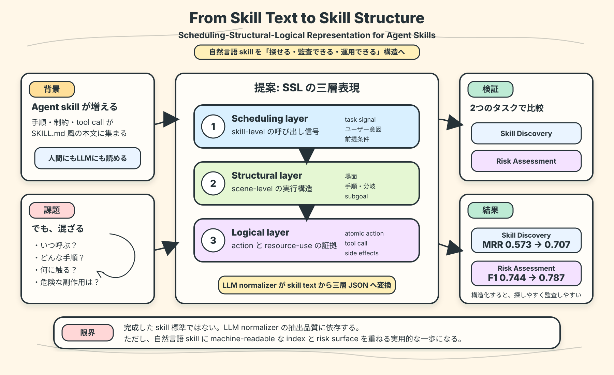

第一の貢献は、agent skill artifact 向けの SSL 表現を提案したこと。Scheduling、Structural、Logical の三層で、呼び出し信号、実行 scene、action / resource-use evidence を分離する。

どんな論文か
この論文の出発点は、LLM agent が reusable skills に頼るようになった一方で、その skill がまだ自然言語中心の artifact として扱われていることにある。SKILL.md のような文書は人間にも LLM にも読みやすいが、呼び出し条件、制御フロー、制約、tool call、resource use が一つの文章面に混ざりやすい。
著者らは、この混線が skill-centered agent system の運用を難しくすると見る。skill を探すときには『どんな状況で呼ぶべきか』を読みたい。risk review では『どの resource に触り、どんな副作用を持つか』を読みたい。しかし自然言語の塊では、これらの証拠が分離されていない。
そこで提案されるのが Scheduling-Structural-Logical、略して SSL 表現である。Scheduling layer は skill-level の呼び出し信号、Structural layer は scene-level の実行構造、Logical layer は action と resource-use の証拠を表す。論文は、Schank and Abelson の scripts、MOPs、conceptual dependency を背景に、この三層で agent skill artifacts を構造化する。
評価では、LLM-based normalizer で既存 skill を SSL に変換し、Skill Discovery と Risk Assessment の二つのタスクで text-only baseline と比較する。結果として、Skill Discovery の MRR は 0.573 から 0.707 へ、Risk Assessment の macro F1 は 0.744 から 0.787 へ改善する。
読後に残るポイントは、SSL が完成した標準や end-to-end skill management ではなく、skill を検索しやすく、監査しやすく、運用しやすくするための実用的な中間表現だということ。Memory And Skill Rot の文脈では、自然言語 skill を増やすだけでは registry が腐るので、機械可読な index と risk surface を重ねる必要がある、という話につながる。
From Skill Text to Skill Structure: The Scheduling-Structural-Logical Representation for Agent Skills は、LLM agent の skill artifact を、自然言語の本文から機械が使いやすい構造へ変換するための論文である。
対象にしている skill は、instructions、control flow、constraints、tool calls を含む reusable capability package である。著者らは、現在の agent systems ではこうした skill が text-heavy artifact として表現され、機械が使うべき証拠が自然言語に埋もれていると指摘する。
この論文は、agent skill の知識表現を、呼び出し、実行構造、具体的な action / resource use に分ける。これにより、skill discovery と risk assessment を、全文検索や embedding 類似度だけに頼らず、skill の意味構造に基づいて支援しようとする。
課題と貢献
第二の貢献は、Schank and Abelson の Memory Organization Packets、Script Theory、Conceptual Dependency を、現代の LLM agent skill 表現へ接続したこと。自然言語 instructions を、場面と行為の構造として読む補助線を与える。
第三の貢献は、LLM-based normalizer により既存 skill artifact から SSL を生成する pipeline を示したこと。人間が全部を手で構造化するのではなく、既存の skill 文書から構造を抽出する方向を取る。
第四の貢献は、Skill Discovery と Risk Assessment で text-only baseline より良い結果を示したこと。MRR と macro F1 の改善により、明示的で source-grounded な構造が skill 検索と監査に効くことを示す。
手法のしくみ
1
入力は、自然言語を中心にした skill artifact である。そこには、いつ使うべきか、どんな手順を踏むか、どの tool や resource に触るか、どんな制約があるかが混在している。
2
Scheduling layer は、skill-level の invocation interface を表す。どんな task signal、ユーザー意図、環境条件、前提があると skill を呼ぶべきかを扱う。
3
Structural layer は、scene-level の execution structure を表す。skill がどんな場面、手順、分岐、subgoal、control flow を持つかを扱う。
4
Logical layer は、concrete side effects に近い情報を表す。atomic action、tool call、resource use、制約、リスクに関わる証拠を分けて取り出す。
5
著者らは LLM-based normalizer を使って、text-heavy skill artifact から SSL 表現を生成する。そのうえで、Skill Discovery と Risk Assessment の downstream task に利用し、text-only 表現と比較する。
検証結果
SSL 表現を使うことで MRR が 0.573 から 0.707 に改善し、自然言語全文だけを見るより呼び出し信号や構造化された skill evidence を分けて読む方が有利だと分かる。
macro F1 が 0.744 から 0.787 に改善し、tool / resource side effects や constraints が構造として取り出されている方が risk review しやすいと分かる。
論文が使う corpus は 6,184 skills、403 task queries、500 risk-labeled skills であり、この規模になると discovery と review を構造で支える意味が出てくる。
SSL は agent skill の最終標準ではなく、自然言語 skill を operationally actionable にするための source-grounded な中間構造として読むのがよい。
限界と読みどころ
SSL は、skill management の完成形ではない。論文自身も、end-to-end mechanism for managing and using skills ではなく、inspectable、reusable、operationally actionable な skill representation へ向かう実用的な一歩として位置づけている。
LLM-based normalizer に依存するため、抽出された構造が常に正しいとは限らない。skill 本文が曖昧だったり、副作用が暗黙だったりすると、SSL も不完全になる。
評価タスクは Skill Discovery と Risk Assessment に絞られている。実際の agent が skill を使ってタスク成功率を上げるか、skill registry を長期運用できるかまでは直接評価していない。
自然言語 skill の強みも残る。人間が読み、修正し、文脈を補えることは重要なので、SSL は SKILL.md を捨てる話ではなく、本文の上に machine-readable structure を重ねる話として読むのがよい。
読みながら見る図表や節
- 論文の Figure 1 は、skill text から SSL 表現へ変換する全体像を見る入口になる。元図の見た目ではなく、自然言語の skill artifact から三層の structured representation を取り出す流れを読むとよい。
- Scheduling layer、Structural layer、Logical layer の違いを見るときは、呼び出し条件、実行手順、副作用の三つが一つの SKILL.md に混ざる場面を想像すると分かりやすい。
- 結果を見るときは、Skill Discovery の MRR 改善と Risk Assessment の macro F1 改善を並べる。前者は見つけやすさ、後者は危険性の読みやすさに対応する。
- Memory And Skill Rot の文脈で読むなら、skill registry が増えたときに discovery、risk review、重複統合、古さの管理が難しくなる、という実務上の痛みと接続するとよい。
次に読むなら
- この論文は、SKILL.md のような自然言語 skill を否定するものではなく、自然言語本文に構造化された索引と監査面を足す話として読むとよい。
- 次に読むなら、Counterfactual Trace Auditing of LLM Agent Skills と並べると、skill を構造化する話と、実行 trace 上で skill の影響を監査する話がつながる。
- Dynamic Skill Lifecycle Management と並べると、skill を retain、retire、expand する lifecycle と、SSL のような skill metadata がどう接続できるかを考えやすい。
- 実務に引くなら、既存 skill に trigger、resource use、side effects、risk label、last reviewed を持たせる設計から試すのが近い。
読後Q&A
この論文の中心問いは？
自然言語中心の agent skill artifact を、検索や risk review に使いやすい構造としてどう表現するか。
なぜ skill text だけでは足りないの？
呼び出し条件、実行手順、制約、tool call、resource use、副作用が同じ文章面に混ざり、skill discovery や risk assessment で必要な証拠を取り出しにくいから。
SSL とは？
Scheduling-Structural-Logical の略。agent skill を、呼び出し信号、実行構造、action / resource-use evidence の三層に分ける表現である。
Scheduling layer は何を見る？
その skill をいつ呼ぶべきか、どんな task signal やユーザー意図や環境条件が invocation interface になるかを見る。
Structural layer は何を見る？
skill がどんな scene、subgoal、手順、分岐、control flow を持つかを見る。
Logical layer は何を見る？
atomic action、tool call、resource use、constraints、side effects のような、監査や実行に効く具体的な証拠を見る。
評価結果は？
Skill Discovery の MRR は 0.573 から 0.707 に、Risk Assessment の macro F1 は 0.744 から 0.787 に改善した。
この論文は SKILL.md を捨てる話？
違う。自然言語 skill の読みやすさを残しつつ、その上に machine-readable な index、structure、risk surface を重ねる話である。
Memory And Skill Rot とどうつながる？
skill registry が増えるほど discovery、risk review、重複統合、古さの管理が難しくなる。SSL は、その rot を防ぐための構造化された skill interface として読める。
一言でいうと？
agent skill は読めるだけでは足りない。呼び出し、構造、副作用を分けて、探せて監査できる形にする必要がある。